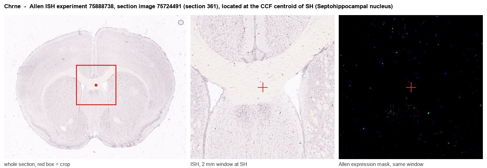
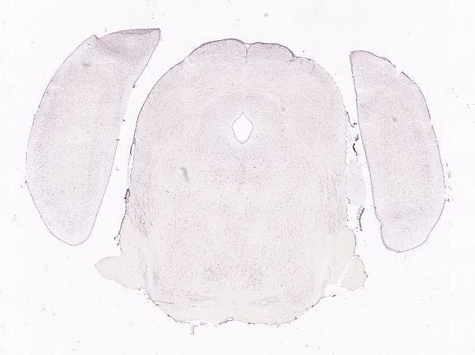
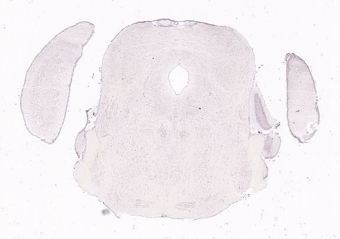
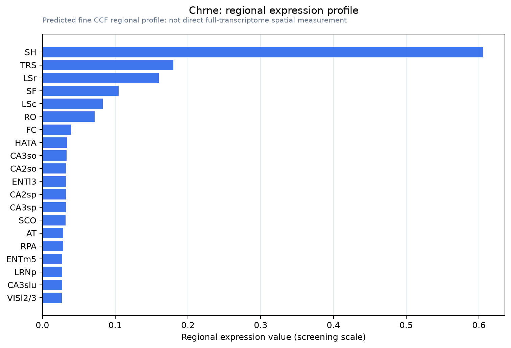

Chrne
Acetylcholine receptor subunit epsilon
Spatial tier: STRICT_EXCLUSIVE · Class: ION_CHANNEL · Top region: SH (Septohippocampal nucleus) · Positive regions: 3/554
51.8Discovery Score
46.3Targetability Score
CEvidence grade C
What this means: Chrne: predicted fine-region profile is strict-exclusive, with 3 positive regions out of 554 (limit 12); direct spatial validation is required.
Function in SH: evidence, prediction, innovation
- Gene function
- Chrne encodes the epsilon subunit of the muscle-type nicotinic acetylcholine receptor, which after birth replaces the fetal gamma subunit in the adult (alpha1)2-beta1-delta-epsilon pentamer at the neuromuscular junction, a cation channel with faster kinetics and higher conductance. Human CHRNE mutations cause congenital myasthenic syndromes; epsilon-null mice die within months.
- Region function
- The septohippocampal nucleus is a small midline septal cell group next to the medial septum and diagonal band, whose GABAergic and cholinergic neighbours pace hippocampal theta and support spatial memory.
- Published in this region
- none No region-specific literature found. The closest finding is RT-PCR detection in adult mouse cortex, hippocampus and cerebellum of mRNA for muscle subunits alpha1, beta1, delta and epsilon plus a brain-specific truncated variant epsilon(t) lacking exon 8 (Ghedini 2010), with no septal expression reported.
- Predicted function
- Prediction: if septohippocampal Chrne transcripts are real rather than low-level or truncated, they could add a muscle-like, alpha-bungarotoxin-sensitive nicotinic conductance to septal neurons receiving cholinergic collaterals, modulating theta-related firing. Conditional deletion would most likely give no phenotype; a positive result would be an alpha-bungarotoxin-sensitive but alpha7-independent current.
- Innovation
- ★★★☆☆ 3/5 Entirely unstudied in brain circuits, and the muscle-restricted biology and truncated brain isoform make septal expression uncertain.
- Tools
- Chrne-null (epsilon-subunit-deficient) mice (Schwarz 2000); alpha-bungarotoxin blocks muscle-type receptors; anti-AChR epsilon antibodies and RT-PCR primers for epsilon(t) (Ghedini 2010); no Chrne Cre/Flp driver known.
- References
Direct evidence located at the region

Allen ISH experiment 75888738, section image 75724491 (section 361): the section that contains the CCF centroid of Septohippocampal nucleus according to the Allen image-to-atlas alignment (reference_to_image), with a 2 mm window around that point. Left: whole section, red box = window. Middle: ISH signal. Right: Allen's expression-mask view of the same window. open this image in the Allen viewer
Look it up yourself: Allen Mouse Brain ISH for ChrneAllen reference atlas: SH (structure 333)ABC Atlas MERFISH viewer(in the ABC Atlas choose dataset MERFISH-C57BL6J-638850-CCF, colour cells by gene "Chrne" or by parcellation_substructure "SH")All genes confined to SH + 3-D brain
Direct spatial evidence
MERFISH REGION LOCATOR

DIRECT ALLEN ISH

DIRECT ALLEN ISH

Regional expression figure

Predicted WMB × fine-CCF profile; not direct full-transcriptome spatial measurement.
Spatial profile
Evidence and specificity
- Evidence status
- PREDICTED_FINE
- Direct sources
- None; predicted localization only
- Exclusive threshold
- 12 positive regions out of 554
- Spatial specificity
- 0.471
- Top-region fraction
- 0.316
- Filter status
- PASS
Interpretation limits
- Cell-type-to-region projection is imputed expression, not direct spatial measurement.
- Adult reference atlases do not establish stability across age, sex, strain, state, or disease.
- Transcript abundance does not guarantee protein abundance or genetic-tool performance.